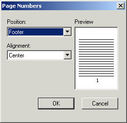
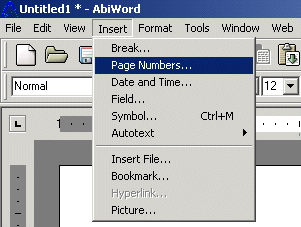

If you have more than one page and you want to number your pages. Then pay attention because this step will teach you how to do just that.
Select "Insert" from the menu.

Select "Page Number" from the drop down list.
Note: In this box you can adjust where you want the page number to show up on your document.
Open the drop down box underneath the word "Position".
Select either "Header" (top) or "Footer" (bottom)
Select "Alignment" to adjust where you want the page number to be located on your page.
Select "Right","Left" or "Center", this will place the page number in one of the three areas.
Be sure to "Preview the page before you select OK.

Select the "OK" button.
Nowq you will notice page numbers on your document. However if at anytime during the process of numbering your pages you want to exit this function click the "Cancel" button to go back to your document and no page number will be assigned to your letter.
Numbering pages is important if you have more than one page to your document, also having a time and date on your letter can be helpful as well.